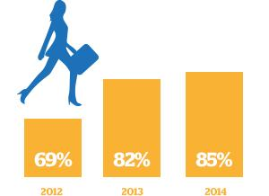
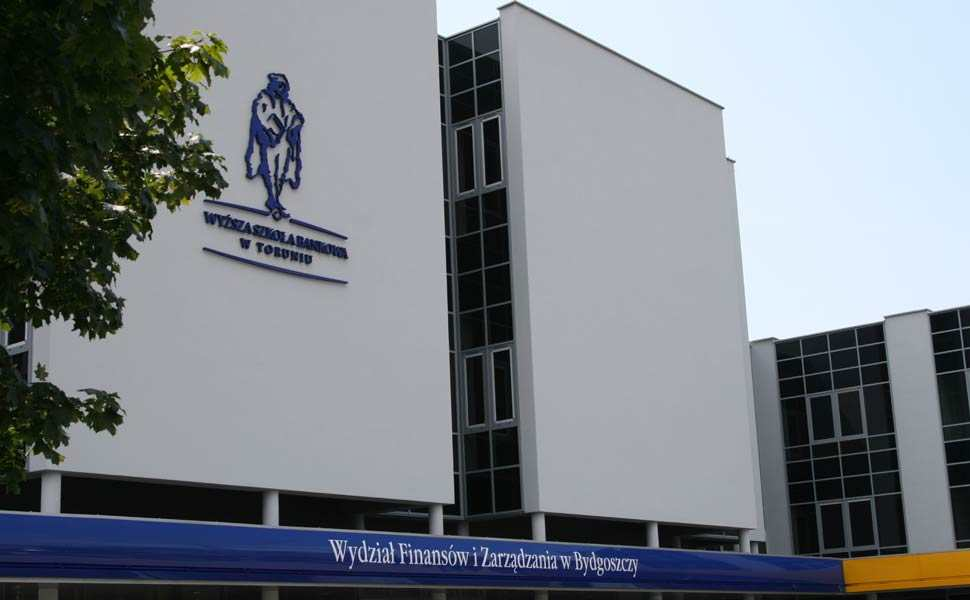

Liczba studentów studiów I stopnia w Wyższych Szkołach Bankowych pracujących podczas studiów według badań w kolejnych latach. Zaufaj dużej Uczelni Wyższym Szkołom Bankowym zaufało już 250 000 studentów i absolwentów. Cieszą się one także dobrą opinią pracodawców: w rankingu przeprowadzonym w 2013 roku przez tygodnik „Wprost” okazały się być najbardziej cenioną przez pracodawców grupą uczelni biznesowych w Polsce. Wybierając WSB, masz pewność, że Twój dyplom będzie rozpoznawalny na rynku. Grupa Wyższych Szkół Bankowych | Lider rankinków


Co nas wyróżnia? Jako uczelnia biznesu potrafimy łączyć wiele dziedzin, dlatego kierunki, jakie proponujemy na studiach I stopnia, II stopnia i podyplomowych są tak zróżnicowane. Ale łączy je jedno – biznes i praktyka. Uczymy jak przekuć wiedzę i umiejętności w dobrze płatną pracę, jak wykorzystać swoje predyspozycje w satysfakcjonujące zajęcie. Nasi absolwenci są naszą wizytówką. Co roku wdrażamy innowacje w nauczaniu i funkcjonowaniu uczelni. Dzięki takiemu podejściu doceniają nas pracodawcy z regionu, a historie sukcesów naszych studentów napawają dumą.